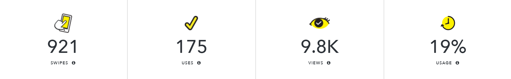

About This Project
This Snapchat filter is part of the social media campaign to promote Vocal Point All-Female A Cappella's show "VeepzFeed Presents: The Vocal Point Spring Show".
Goals
- promote information of this upcoming event to students on campus
- engage protential audiences through the fun of social media activities
- reach out to more audience through the platform of Snapchat
Production
- Adobe Illustrator
- Adobe Photoshop
Performance
- users swiped through this filter 921 times
- the filter was used by users 175 times
- the filter received 9.8k views